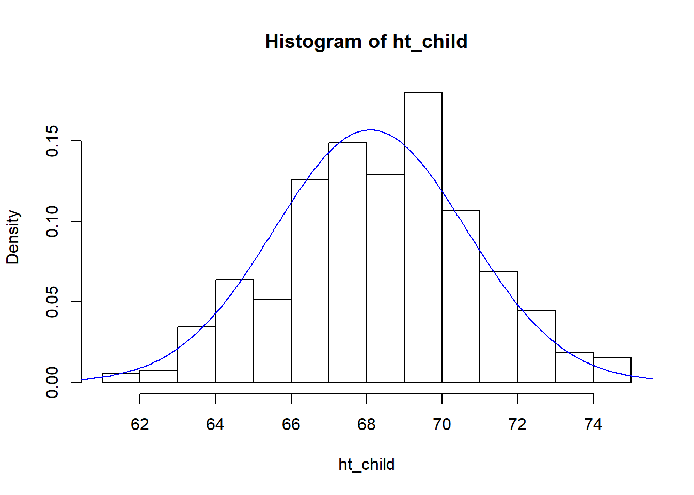
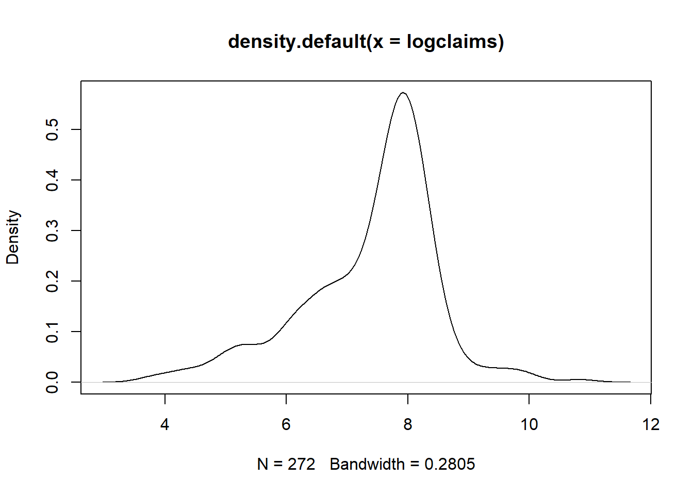
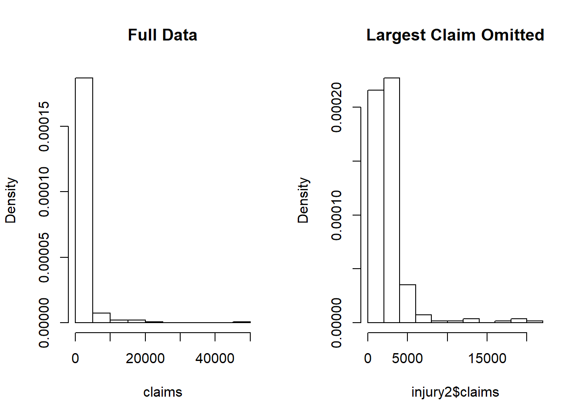
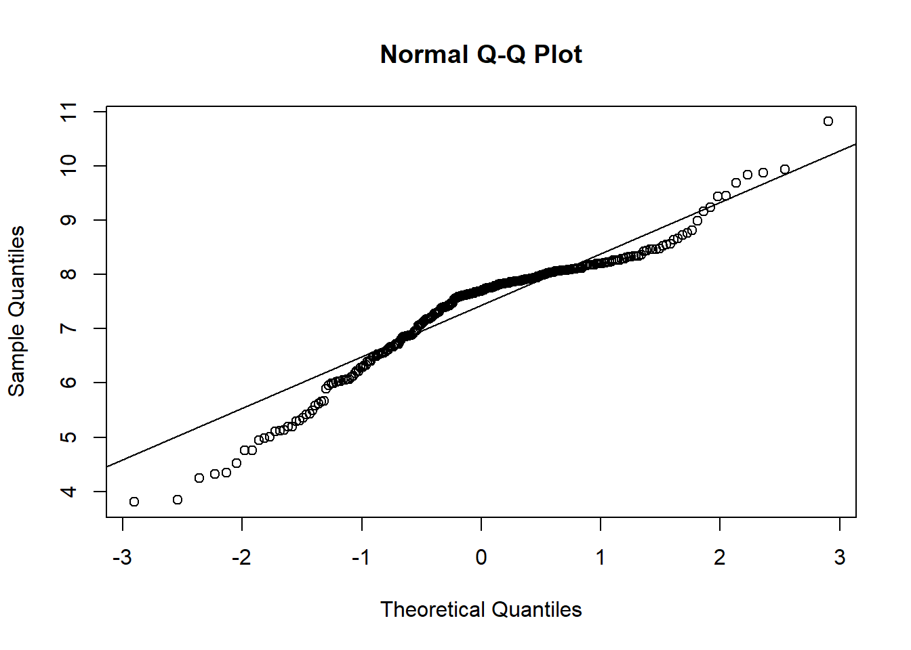

Chapter 1 Regression and the Normal Distribution
Chapter description
Regression analysis is a statistical method that is widely used in many fields of study, with actuarial science being no exception. This chapter introduces the role of the normal distribution in regression and the use of logarithmic transformations in specifying regression relationships.
1.1 Fitting a normal distribution
In this section, you learn how to:
- Calculate and interpret two basic summary statistics
- Fit a data set to a normal curve
- Calculate probabilities under a standard normal curve
1.1.1 Video
1.1.1.1 Video Overhead
()
1.1.1.2 Video Overhead Details
Show Overhead A. Description of the data details

Show Overhead B. Read and examine data structure details
Show Overhead C. Summary stats for parents’ height details

Show Overhead D. Fit a normal curve to parents’ height details

Show Overhead E. Use the normal approximation to determine the probability of the height of tall parents details
1.1.2 Exercise. Fitting Galton’s height data
Assignment Text
The Galton data has already been read into a dataframe called heights. These data include the heights of 928 adult children child_ht, together with an index of their parents’ height parent_ht. The video explored the distribution of the parents’ height; in this assignment, we investigate the distribution of the heights of the adult children.
Instructions
- Define the height of an adult child as a global variable
- Use the function mean() to calculate the mean and the function sd() to calculate the standard deviation
- Use the normal approximation and the function pnorm() determine the probability that an adult child’s height is less than 72 inches
Hint
Remember that we can reference a variable, say var, from a data set such as heights, as heights$var.
1.1.3 Exercise. Visualizing child’s height distribution
Assignment Text
As in the prior exercise, from the Galton dataset heights, the heights of 928 adult children have been used to create a global variable called ht_child. We also have basic summary statistics, the mean height mchild and the standard deviation of heights in sdchild. In this exercise, we explore the fit of the normal curve to this distribution.
Instructions
- To visualize the distribution, use the function hist() to calculate the histogram. Use the
freq = FALSEoption to give a histogram with proportions instead of counts. - Use the function seq() to determine a sequence that can be used for plotting. Then, with the function lines(), superimpose a normal curve on the histogram
- Determine the probability that a child’s height is greater than 72 inches
Hint - Use the function dnorm() to calculate the normal density, similar to the cumulative probabilites that you calculated using pnorm() - To calculate probabilities greater that an amount, simply use 1 minus the cumulative probability
Pre-exercise code
# Pre-exercise code
heights <- read.csv("CSVData\\galton_height.csv",header = TRUE)
#heights <- read.csv("https://assets.datacamp.com/production/repositories/2610/datasets/c85ede6c205d22049e766bd08956b225c576255b/galton_height.csv", header = TRUE)
ht_child <- heights$child_ht
mchild <- mean(ht_child)
sdchild <- sd(ht_child)SampleCode
`@sample_code`
#Visualize the Distribution
___(___, freq = FALSE)
#Determine a sequence. Then, graph a histogram with a normal curve superimposed
x <- seq(60, 80,by = 0.1)
___(x, dnorm(x,mean = mchild, sd = sdchild), col = "blue")
# Determine the probability that a child's height is greater than 72
prob <- 1 -
probSolution
# Solution
hist(ht_child, freq = FALSE)
x <- seq(60, 80,by = 0.1)
lines(x, dnorm(x, mean = mchild, sd = sdchild), col = "blue")
prob <- 1 - pnorm(72, mean = mchild , sd = sdchild)
prob[1] 0.0622019Submission Correctness Tests (SCT) test_error() test_object(“prob”, incorrect_msg = “The probability of being greater than 72 was calculated incorrectly. (You might check the hint.)”) success_msg(“Excellent! Visualizing a distribution, especially with reference to a normal, is important for communicating results of your analysis.”)
1.2 Visualizing distributions
1.2.1 Video (Exercise). Visualizing distributions
1.2.1.1 Learning Objectives
In this section, you learn how to:
- Calculate and interpret distributions using histograms
- Calculate and interpret distributions using density plots
1.2.1.2 Video Data Description
For our first look at an insurance data set, we consider data from Rempala and Derrig (2005). They considered claims arising from automobile bodily injury insurance coverages. These are amounts incurred for outpatient medical treatments that arise from automobile accidents, typically sprains, broken collarbones and the like. The data consists of a sample of 272 claims from Massachusetts that were closed in 2001 (by “closed,” we mean that the claim is settled and no additional liabilities can arise from the same accident). Rempala and Derrig were interested in developing procedures for handling mixtures of “typical” claims and others from providers who reported claims fraudulently. For this sample, we consider only those typical claims, ignoring the potentially fraudulent ones.
# Reformat Data Set
injury <- read.csv("CSVData\\MassBodilyInjury.csv",header = TRUE)
str(injury)
head(injury)
# PICK THE SUBSET OF THE DATA CORRESPONDING TO PROVIDER A
injury2 <- subset(injury, providerA ! = 0 )
injury2$claims <- 1000*injury2$claims
injury2$logclaims <- log(injury2$claims)
injury3 <- injury2[c("claims","logclaims")]
write.csv(injury3,"CSVData\\MassBI.csv",row.names = FALSE)1.2.1.3 Video
Overhead A. Bring in Data, Introduce Logarithmic Claims
injury <- read.csv("CSVData\\MassBI.csv",header = TRUE)
# CHECK THE NAMES, DIMENSION IN THE FILE AND LIST THE FIRST 8 OBSERVATIONS ;
str(injury)
head(injury)
attach(injury)The following objects are masked from injury (pos = 3):
claims, logclaimsThe following objects are masked from injury (pos = 4):
claims, logclaimsThe following objects are masked from injury (pos = 5):
claims, logclaimsThe following objects are masked from injury (pos = 6):
claims, logclaimsclaims <- injury$claims
par(mfrow = c(1, 2))
hist(claims)
hist(logclaims)
'data.frame': 272 obs. of 2 variables:
$ claims : int 45 47 70 75 77 92 117 117 140 145 ...
$ logclaims: num 3.81 3.85 4.25 4.32 4.34 ...
claims logclaims
1 45 3.806662
2 47 3.850148
3 70 4.248495
4 75 4.317488
5 77 4.343805
6 92 4.521789Overhead B. Show how to get a finer grid for histograms
par(mfrow = c(1, 2))
hist(logclaims)
hist(logclaims,breaks = 15)
Overhead C. Introduce the density plot
par(mfrow = c(1, 2))
plot(density(logclaims))
hist(logclaims, breaks = 15,freq = FALSE)
lines(density(logclaims))
1.2.2 Exercise. Visualizing bodily injury claims with density plots
Assignment Text
In the prior video, you learned about the Massachusetts bodily injury dataset. This dataframe, injury, has been read in and the global variable claims has been created. This assignment reviews the hist() function for visualizing distributions and allows you to explore density plotting, a smoothed version of the histogram.
Instructions
- Use the function log() to create the logarithmic version of the claims variable
- Calculate a histogram of logarithmic with 40 bins using an option in the hist() function,
breaks =. - Create a density plot of logarithmic claims using the functions plot() and density().
- Repeat the density plot, this time using a more refined bandwidth equal to 0.03. Use an option in the density() function,
bw =.
Hint
Pre-exercise code
# Pre-exercise code
injury <- read.csv("CSVData\\MassBI.csv",header = TRUE)
#injury <- read.csv("https://assets.datacamp.com/production/repositories/2610/datasets/8cca19d0503fcf6e9d30d9cb912de5ba95ecb9c1/MassBI.csv", header = TRUE)
claims <- injury$claimsSampleCode
`SampleCode`
#Create the logarithmic claims variable
logclaims <- ___
#Create a histogram usins 40 bins
___(logclaims, breaks = 40,freq = FALSE)
box()
# Create a density plot of logarithmic claims
plot(___(logclaims))
# Create a density plot of logarithmic claims with a smaller bandwidth
___Solution
# Solution
logclaims <- log(claims)
hist(logclaims , breaks = 40,freq = FALSE)
box()
plot(density(logclaims))
plot(density(logclaims, bw = 0.03))
Submission Correctness Tests (SCT)
success_msg(“Excellent! Visualizing the distribution is important and smoothing techniques allow viewers to see important patterns without being distracted by random fluctations.”)
1.3 Summarizing distributions
1.3.1 Video (Exercise). Summarizing distributions
1.3.1.1 Learning Objectives
In this section, you learn how to:
- Calculate and interpret basic summary statistics
- Calculate and interpret distributions using boxplots
- Calculate and interpret distributions using qq plots
1.3.1.2 Video Overheads
Overhead A. Summary Statistics
injury <- read.csv("CSVData\\MassBI.csv",header = TRUE)
#injury <- read.csv("https://assets.datacamp.com/production/repositories/2610/datasets/8cca19d0503fcf6e9d30d9cb912de5ba95ecb9c1/MassBI.csv", header = TRUE)
attach(injury)
# SUMMARY STATISTICS
summary(injury)
sd(claims);sd(logclaims)
length(claims) claims logclaims
Min. : 45.0 Min. : 3.807
1st Qu.: 892.5 1st Qu.: 6.794
Median : 2210.0 Median : 7.701
Mean : 2697.7 Mean : 7.388
3rd Qu.: 3215.0 3rd Qu.: 8.076
Max. :50000.0 Max. :10.820
[1] 3944.445
[1] 1.10093
[1] 272Overhead B. Boxplot
# BASIC BOXPLOT
boxplot(logclaims)
quantile(logclaims, probs = 0.75)
# BOXPLOT WITH ANNOTATION
boxplot(logclaims, main = "Boxplot of logclaims")
text(1, 7.6, "median", cex = 0.7)
text(1, 6.55, "25th percentile", cex = 0.7)
text(1, 7.95, "75th percentile", cex = 0.7)
arrows(1.05, 4.9, 1.05, 3.6, col = "blue", code = 3, angle = 20, length = 0.1)
text(1.1, 4.4, "outliers", cex = 0.7)
text(1.1, 10.9, "outlier", cex = 0.7)
75%
8.075579 Overhead C. QQ Plot
summary(injury)
quantile(claims, probs = 0.75)
quantile(logclaims, probs = 0.75)
log(quantile(claims, probs = 0.75))
qnorm(p = 0.75, mean = mean(logclaims), sd = sd(logclaims))
(qnorm(p = 0.75, mean = mean(logclaims), sd = sd(logclaims)) -mean(logclaims)) /
sd(logclaims)
qnorm(p = 0.75, mean = 0, sd = 1)
# QUANTILE - QUANTILE PLOT
qqnorm(logclaims)
qqline(logclaims) 
claims logclaims
Min. : 45.0 Min. : 3.807
1st Qu.: 892.5 1st Qu.: 6.794
Median : 2210.0 Median : 7.701
Mean : 2697.7 Mean : 7.388
3rd Qu.: 3215.0 3rd Qu.: 8.076
Max. :50000.0 Max. :10.820
75%
3215
75%
8.075579
75%
8.075583
[1] 8.131056
[1] 0.6744898
[1] 0.67448981.3.2 Exercise. Summarizing bodily injury claims with box and qq plots
Assignment Text
The Massachusetts bodily injury data has already been read and used to create the global variable claims representing bodily injury claims. The previous video showed how to present the distribution of logarithmic claims which appeared to be approximately normally distributed. However, users are not really interested in log dollars but want to know about a unit of measurement that is more intuitive, such as dollars.
So this assignment is based on claims, not the logarithmic version. You will use the functions boxplot() and qqnorm() to visualize the distribution through boxplots and quantile-quantile, or qq-, plots. But, because we are working with such a skewed distribution, do not be surprised that it is difficult to interpret these results readily.
Instructions
- Produce a box plot for claims
- Determine the 25th empirical percentile for claims using the quantile() function.
- Determine the 25th percentile for claims based on a normal distribution using the qnorm() function.
- Produce a normal qq plot for claims using the function qqnorm(). The qqline() function is handy for producing a reference line.
Hint
Note that qnorm() (one q) is for a normal quantile and qqnorm(). (two q’s!) is for the normal qq plot
Pre-exercise code
# Pre-exercise code
injury <- read.csv("CSVData\\MassBI.csv", header = TRUE)
#injury <- read.csv("https://assets.datacamp.com/production/repositories/2610/datasets/8cca19d0503fcf6e9d30d9cb912de5ba95ecb9c1/MassBI.csv", header = TRUE)
claims <- injury$claimsSampleCode
`SampleCode`
#Produce a box plot for claims
___(claims)
#Determine the 25th empirical percentile for claims
q25 <- ___(claims, probs = ___)
q25
#Determine the 25th percentile for claims based on a normal distribution
qn25 <- ___(p = ___, mean = mean(claims), sd = sd(claims))
qn25
#Produce a normal qq plot for claims
___(claims)
___(claims)Solution
# Solution
boxplot(claims)
q25 <- quantile(claims, probs = 0.25)
q25
qn25 <- qnorm(p = 0.25, mean = mean(claims), sd = sd(claims))
qn25
qqnorm(claims)
qqline(claims) 
25%
892.5
[1] 37.22942Submission Correctness Tests (SCT)
test_error() test_object(“q25”, incorrect_msg = “You calculated the 25th quantile incorrectly. Check out the quantile() function.”) test_object(“qn25”, incorrect_msg = “You calculated the 25th quantile incorrectly. Check out the qnorm() function.”) success_msg(“Congratulations on learning about box and qq plots. Although you are unlikely to show these plots to consumers of your analysis, you will find them useful tools for exploring multivariate aspects of data.”)
1.3.3 Exercise. Effects on distributions of removing the largest claim
Assignment Text
The Massachusetts bodily injury dataframe injury has been read in; our focus is on the claims variable in that dataset.
In the previous exercise, we learned that the Massachusetts bodily injury claims distribution was not even close to approximately normal (as evidenced by the box and qq- plots). Non-normality may be induced by skewness (that we will handle via transformations in the next section). But, seeming non-normality can also be induced by one or two very large observations (called an outlier later in the course). So, this exercise examines the effects on the distribution of removing the largest claims.
Instructions
- Use the function tail() to examine the
injurydataset and identify the largest claim - Use the function subset() to create a subset omitting the largest claim
- Compare the summary statistics of the omitted claim distribution to the full distribution
- Compare the two distributions visually via histograms plotted next to another.
par(mfrow = c(1, 2))is used to organize the plots you create. Do not alter this code.
Hint
For this data set, the [subset()] argument claims < 25000 will keep all but the largest claim
Pre-exercise code
# Pre-exercise code
injury <- read.csv("CSVData\\MassBI.csv", header = TRUE)
#injury <- read.csv("https://assets.datacamp.com/production/repositories/2610/datasets/8cca19d0503fcf6e9d30d9cb912de5ba95ecb9c1/MassBI.csv", header = TRUE)
claims <- injury$claimsSampleCode
`SampleCode`
# Examine the tail of the `injury` dataset
tail(___)
# Create a subset omitting the largest claim
injury2 <- subset(injury, ___)
# Compare the summary statistics of the omitted claim distribution to the full distribution
summary(___)
summary(injury2)
# Compare the two distributions visually via histograms plotted next to another
par(mfrow = c(1, 2))
hist(___, freq = FALSE, main = "Full Data")
hist(___, freq = FALSE, main = "Largest Claim Omitted")Solution
# Solution
tail(injury)
injury2 <- subset(injury, claims < 25000 )
summary(injury)
summary(injury2)
par(mfrow = c(1, 2))
hist(claims, freq = FALSE, main = "Full Data")
hist(injury2$claims, freq = FALSE, main = "Largest Claim Omitted")
claims logclaims
267 12688 9.448412
268 16043 9.683028
269 18847 9.844109
270 19500 9.878170
271 20827 9.944006
272 50000 10.819778
claims logclaims
Min. : 45.0 Min. : 3.807
1st Qu.: 892.5 1st Qu.: 6.794
Median : 2210.0 Median : 7.701
Mean : 2697.7 Mean : 7.388
3rd Qu.: 3215.0 3rd Qu.: 8.076
Max. :50000.0 Max. :10.820
claims logclaims
Min. : 45 Min. :3.807
1st Qu.: 885 1st Qu.:6.785
Median : 2196 Median :7.694
Mean : 2523 Mean :7.376
3rd Qu.: 3205 3rd Qu.:8.072
Max. :20827 Max. :9.944 Submission Correctness Tests (SCT)
test_error() test_object(“injury2”, incorrect_msg = “You defined the injury dataframe incorrectly. Check out the subset function (and maybe look over the hint).”) success_msg(“Congratulations! The goal of predictive modeling is to discover patterns in the data. However, sometimes seeming ‘patterns’ are the result of one or two unusual observations. Unusual observations may be due to incorrect data gathering procedures or just due to wild fluctuations in a process of interest but are common in predictive modeling.”)
1.4 Transformations
1.4.1 Video (Exercise). Transformations
1.4.1.1 Learning Objectives
In this exercise, you learn how to:
- Symmetrize a skewed distribution using a logarithmic transformation
1.4.1.2 Video Overheads
Overhead A. Simulate a moderately skewed distribution, with transforms
# FIGURE 1.7 - SIMULATE CHI-SQUARE, CREATE 3 TRANSFORMATIONS
set.seed(1237) # set the seed of the random number generator
# allows us to replicate results
X1 <- 10000*rchisq(500, df = 2) # generate variables randomly from a skewed distribution
X2 <- X1^(0.5) # square root transform, could also use sqrt(X1)
X3 <- log(X1) # logarithmic transform
X4 <- -1/X1 # negative reciprocal transformOverhead B. Visualize the distributions
par(mfrow = c(2, 2), cex = .75, mar = c(3,5,1.5,0))
hist(X1, freq = FALSE, nclass = 16, main = "", xlab = "", ylab = "",
las = 1, yaxt = "n",xlim = c(0,200000),ylim = c(0,.00005))
axis(2, at = seq(0,.00005,.00001),las = 1, cex = .3,
labels = c("0", "0.00001", "0.00002","0.00003", "0.00004", "0.00005"))
mtext("Density", side = 2, at = .000055, las = 1, cex = .75)
mtext("y", side = 1, cex = .75, line = 2)
par(mar = c(3,4,1.5,0.2))
hist(X2, freq = FALSE, nclass = 16, main = "", xlab = "", ylab = "",
las = 1,xlim = c(0,400), ylim = c(0,.008))
mtext("Density", side = 2, at = .0088, las = 1, cex = .75)
mtext("Square root of y", side = 1, cex = .75, line = 2)
par(mar = c(3.2,5,1,0))
hist(X3, freq = FALSE, nclass = 16, main = "", xlab = "", ylab = "", las = 1, ylim = c(0,.4))
mtext("Density", side = 2, at = .44, las = 1, cex = .75)
mtext("Logarithmic y", side = 1, cex = .75, line = 2)
par(mar = c(3.2,4,1,0.2))
hist(X4, freq = FALSE, nclass = 16, main = "",xlab = "", ylab = "", las = 1, ylim = c(0,100))
mtext("Density", side = 2, at = 110, las = 1, cex = .75)
mtext("Negative reciprocal of y", side = 1, cex = .75, line = 2)
1.4.2 Exercise. Distribution of transformed bodily injury claims
Assignment Text
We have now examined the distributions of bodily injury claims and its logarithmic version. Grudgingly, we have concluded that to fit a normal curve the logarithmic version of claims is a better choice (again, we really do not like log dollars but you’ll get used to it in this course). But, why logarithmic and not some other transformations?
A partial response to this question will appear in later chapters when we describe interpretation of regression coefficients. Another partial response is that the log transform seems to work well with skewed insurance data sets, as we demonstrate visually in this exercise.
Instructions
Use the code par(mfrow = c(2, 2)) so that four graphs appear in a 2 by 2 matrix format for easy comparisons. Plot the density() of
- claims
- square root of claims
- logarithmic claims
- negative reciprocal of claims
Hint
For negative reciprocal claims, use plot(density(-claims^(-1)))
Pre-exercise code
# Pre-exercise code
injury <- read.csv("CSVData\\MassBI.csv", header = TRUE)
#injury <- read.csv("https://assets.datacamp.com/production/repositories/2610/datasets/8cca19d0503fcf6e9d30d9cb912de5ba95ecb9c1/MassBI.csv", header = TRUE)
claims <- injury$claimsSampleCode
`SampleCode`
#This code helps to organize the four graphs into a 2 by 2 format
par(mfrow = c(2, 2))
#Plot the density of claims
plot(density(___))
#Plot the density of square root of claims
plot(density(___))
#Plot the density of logarithmic claims
plot(density(___))
#Plot the density of the negative reciprocal of claims
plot(density(___))Solution
# Solution
par(mfrow = c(2, 2))
plot(density(claims))
plot(density(claims^(0.5)))
plot(density(log(claims)))
plot(density(-claims^(-1))) 
Submission Correctness Tests (SCT)
success_msg(“Excellent! Transformations of data is a tool that incredibly expands potential applicability of (linear) regression techniques.”)